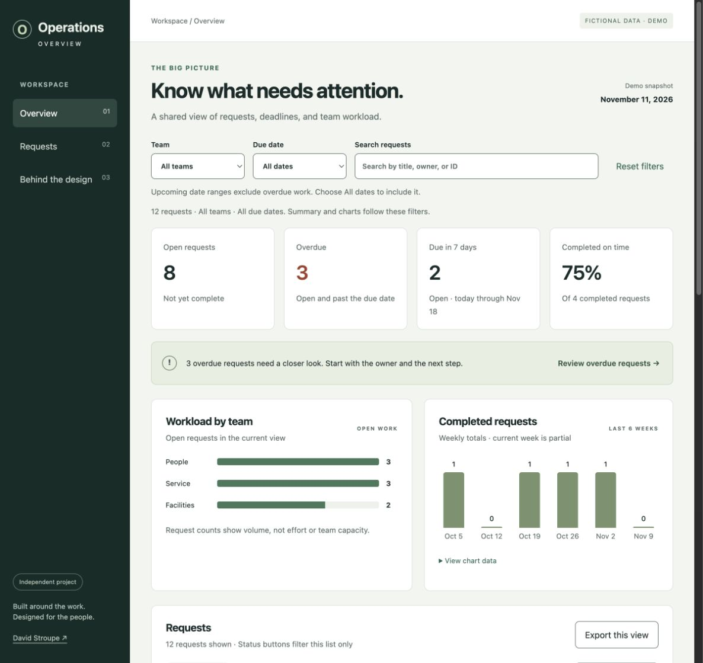

David Stroupe / Data Visualization Analyst
Clear information.
Decisions with context.
I build operational dashboards and reporting tools for government teams and senior leaders.
Featured independent project
Operations Overview
A dashboard for finding overdue work, checking what is coming up, and knowing who owns the next step.

Working demo with fictional data. Includes editable desktop and mobile layouts in Figma.
Professional experience
Overview
Summary → detail01 / Palantir Foundry Workshop · AIP
Operational dashboards ↗
From a service ticket to a useful application.
Readiness overview
Consolidated reporting
Shared context
Supporting detail
02 / Power BI · Executive reporting
Executive reporting ↗
Bring scattered reporting into a shared view.
03 / Power Automate · SharePoint
Request intake automation ↗
Give incoming requests a consistent path.
Appraisal inputs
Excel export04 / SharePoint · Tracking and reporting
Performance and knowledge management ↗
Make work easier to track and explain.
Independent UX project · Consumer ordering
Doughjo
A donut shop with a big personality and an ordering flow that keeps the choices clear.
I designed a box builder for six or twelve donuts, with flavor discovery, optional drinks, and room to change your mind. The same product art follows each flavor from the menu into the box, while Doughshi helps customers get started and celebrates the finished assortment.
Independent fan concept with fictional recipes and prices. Includes a working demo and documented checks. No real orders or payments.
How I work
Before I build, I ask what would actually make the work easier. That is where a useful dashboard starts.
More about my approach ↗